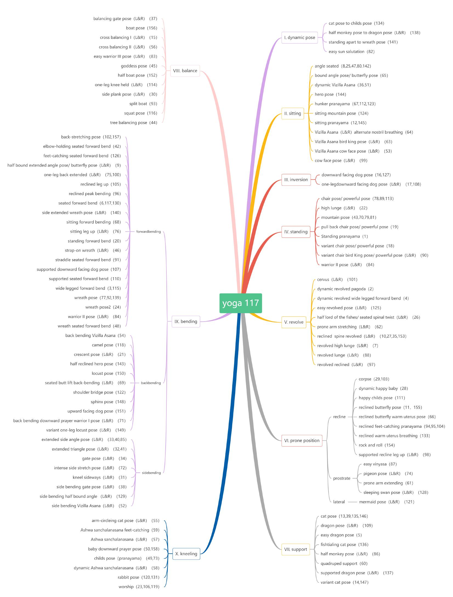

Abstract
Visual-based human action analysis is an important research topic in the field of computer vision, and has great application prospect in sports performance analysis. Currently available 3D action analysis dtasets have a number of limitations in sports application, including the lack of special sports actions, distinct class or score labels and variety of samples. Existing researches mainly use various special RGB videos for sports action analysis, but analysis with 2D features has less effectiveness than 3D representation. In this paper, we introduce a new 3D yoga pose dataset (3D-Yoga) with more than 3,792 action samples and 16,668 RGB-D key frames, collected from 22 subjects performing 117 kinds of yoga poses with two RGB-D cameras. We have reconstructed 3D yoga poses with multi-view data and carried out experiments with a cascade two-stream adaptive graph convolutional neural network (Cascade 2S-AGCN) to recognize and assess these poses. Experimental results have shown the advantage of applying hierarchical analysis method on the proposed 3D-Yoga dataset. The introduction of 3D-Yoga will enable the community to apply, develop and adapt various deep learning techniques for the task of visual-based sports activity analysis.
Data organization
The organization of 3D-Yoga is shown in Fig. 3. Under the Scene directory, there are three folders: Front, Side and Docs. Under Docs, we provide filelist, pose score and camera calibration information. Inside the Front and Side folders, there are 22 folders for each of the 22 subjects respectively.The folders of 7 male subjects are represented as M01, M02,..M07, and the folders of 15 female subjects are represented as F01, F02,..F15. The action number (A01, A02,...A10) represents the folders name of classification I, and the pose ID (a01, a03,...a117) represents the folders name of classification II. In each sub-pose folder corresponding to each motion segment, there are three sub-folders, i.e., Color, Depth and Skeleton.
Design of the two-level hierarchical classification for yoga poses

Each subject performs yoga poses in accordance with four sets of exercises in daily yoga, there are 158 categories of yoga poses in total. Since some yoga poses are repeated, such as hunker pranayama appearing three times, we merge the same movements. The final category of yoga poses in 3D-Yoga is adjusted to 117, and each pose is different but covered all yoga formulas. Hierarchical annotations can benefit deep learning networks because they provide users with rich information of not only pose names but also body postures (standing, bending, etc.). we design a two-level hierarchy to organize these 117 categories of yoga poses, in which the first level has 10 categories and the second level are the sub-categories of yoga poses. For the first level classification, we provide their names, detailed definitions, corresponding labels of second-level, and example poses. The second level classification is the detailed division of first level classification.
Samples of 3D-Yoga dataset

Here are picture groups of examples in our dataset.The first picture group shows different poses of female object under the conditions of Partial-light and High-light. And the second shows different poses of male object under the conditions of Low-light.
Acknowledgements
We would like to thank you for insightful and constructive comments.